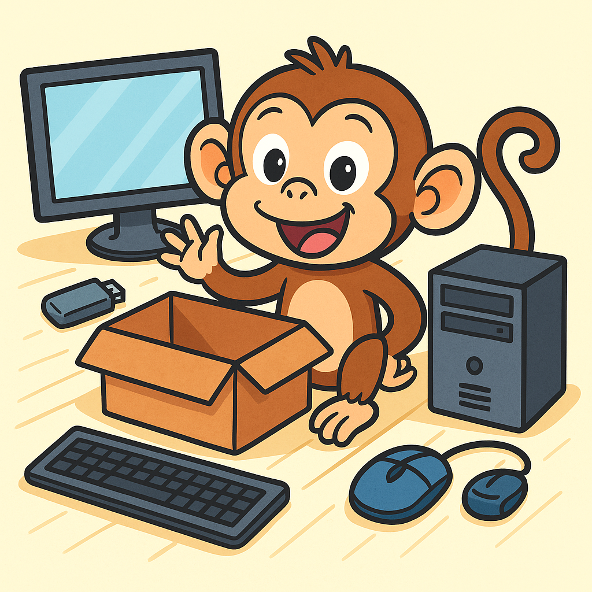
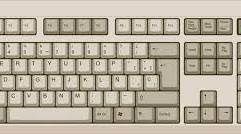
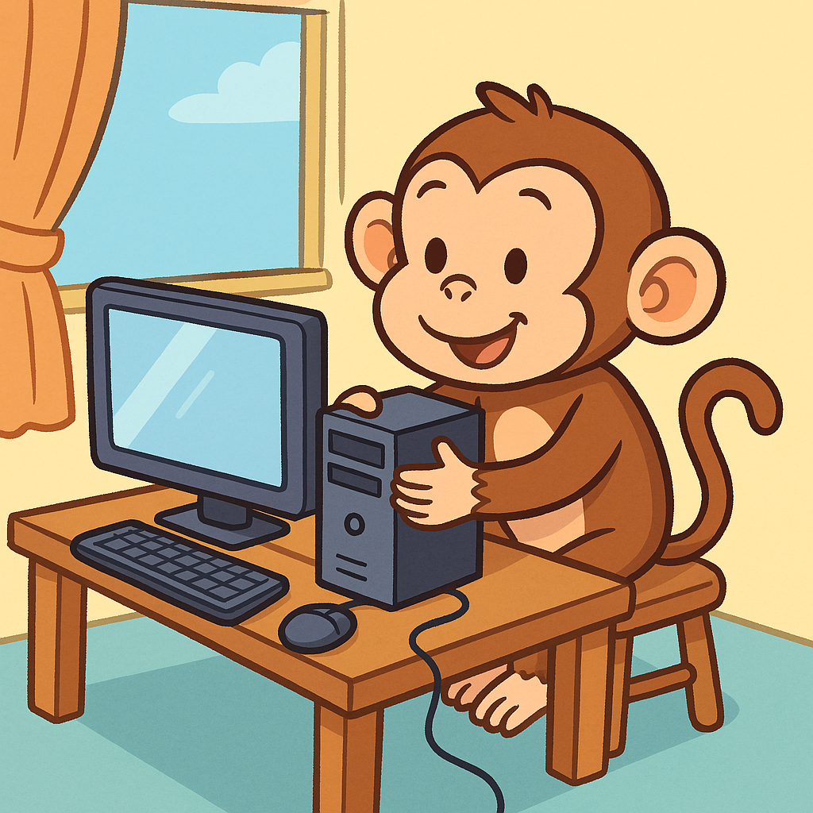
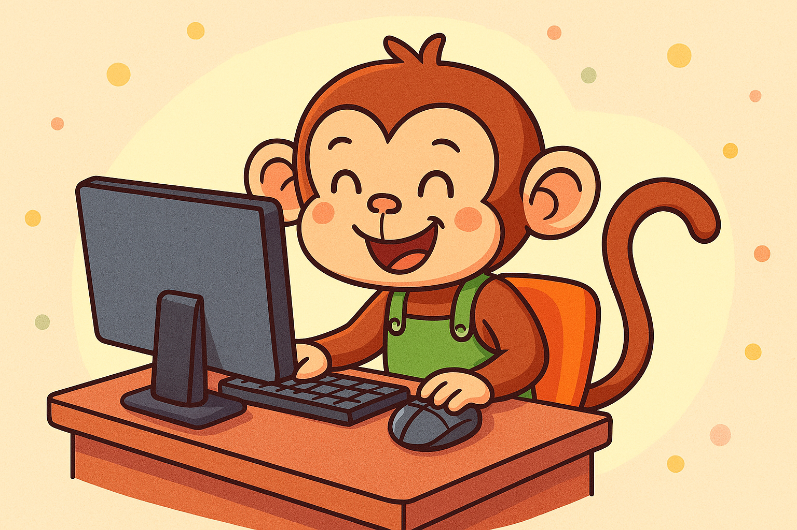
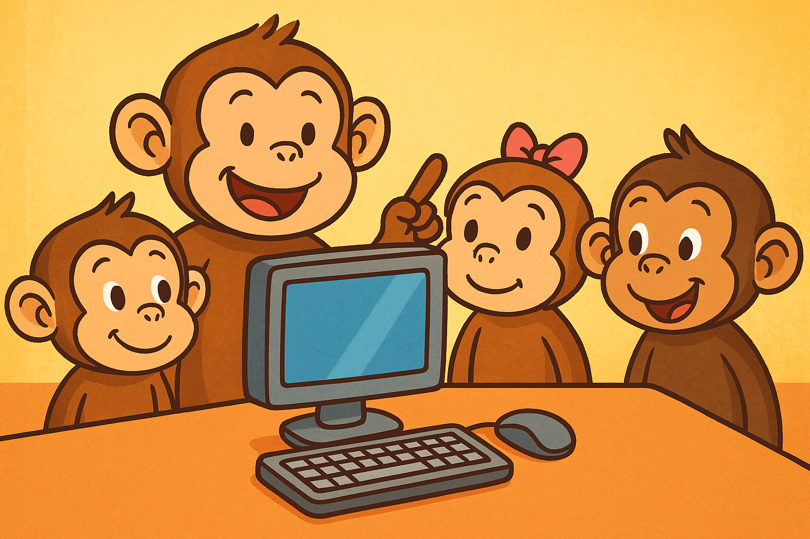

Había una vez un monito muy curioso llamado Coco. Vivía en una casa en el árbol, pero un día… ¡recibió un regalo misterioso!
“¡Guau! ¿Qué es esto?”, dijo Coco al abrir la caja. Adentro había muchas partes: una pantalla, un teclado, cables… ¡Era una computadora!
Primero conoció al Monitor: “Hola Coco, yo muestro todo lo que pasa. ¡Soy como una ventana mágica!”
Después, el Teclado apareció con ritmo: “¡Hola! Si querés escribir, tenés que usar mis teclas. Soy como una máquina de palabras.”
De pronto, algo chiquito se movía… ¡Era el Mouse! “Soy tu guía, Coco. ¡Haceme clic clic y vamos a explorar!”
En una caja fuerte, estaba la CPU: “¡Hola! Yo soy el cerebro de la compu. Aunque no me muevo, pienso todo el tiempo.”
Coco escuchó música... eran los Parlantes: “¡Nosotros ponemos ritmo a todo! Música, juegos, videos, ¡lo que quieras!”
Al lado, los Auriculares lo llamaban en secreto: “¡Pss Coco! Si no querés molestar, usanos a nosotros.”
En una esquina, una camarita saltaba: “¡Soy la WebCam! Puedo mostrar tu carita en la pantalla.”
También conoció a la Impresora, que le dio un dibujo de regalo. “¡Yo hago que tus ideas salten al papel!”
Y no podía faltar el Pendrive: “¡Yo guardo tus secretos y los llevo a donde quieras!”
Al final del viaje, apareció la Notebook: “¡Yo tengo todo en uno! Me podés llevar de paseo.”
Con todos sus nuevos amigos, Coco armó la compu, encendió la pantalla… ¡y empezó a aprender!
Jugó, dibujó, bailó, y hasta se sacó una selfie con la WebCam. ¡Qué divertido fue descubrir el mundo digital!
Y desde ese día, Coco enseñó a todos los monitos cómo usar la compu con respeto, cuidado y alegría.
